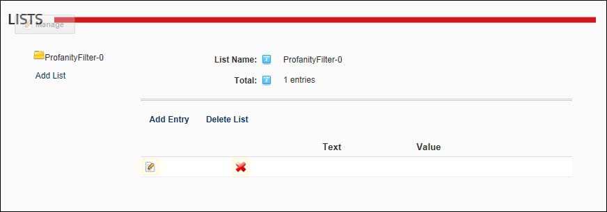

Managing the Profanity List
How to create and manage a list of replacement words for a site. This list allows you to replace unwanted or profane words that are added to messages sent using the Message Center module. Note: You can enter any keyboard characters into both the replaced and replacement fields. E.g. ****
Profanity filters are disabled by default and therefore must be enabled on a site by a SuperUser in order to use this list.See "Configuring Messaging Settings"
- Navigate to Admin > Advanced Settings >
 Lists.
Lists.
- Select the ProfanityFilter list.

The first time you manage this list
- Click the Edit button beside the blank list entry that has been added as an example and should be updated with real information.
- In the Entry Text text box, enter the text to be replaced.
- In the Entry Value text box, enter the replacement word.
- Click the Save button.
Adding a filtered word
- Click the Add Entry button.
- In the Entry Text text box, enter the text to be replaced.
- In the Entry Value text box, enter the replacement word.
- Click the Save button.
Editing a filtered word
- Click the Edit button beside the list entry called "FindThisText". This list entry has been added as an example and should be updated with real information.
- In the Entry Text text box, enter the text to be replaced.
- In the Entry Value text box, enter the replacement word.
- Click the Save button.
Deleting a filtered word
- Click the Delete
 button beside the entry to be deleted. This displays the message "Are You Sure You Wish To Delete This Item?"
button beside the entry to be deleted. This displays the message "Are You Sure You Wish To Delete This Item?"
- Click the OK button to confirm
-
See "About the Message Center Module"
-
See "Configuring Message Center Settings"